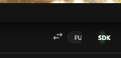
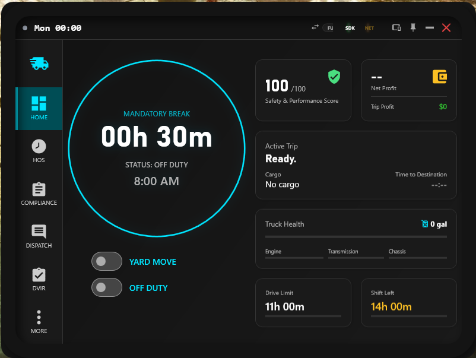

Setup Guide
Configure SimDuty for daily use, stable telemetry, and reliable operational behavior.
Overview
This page covers the settings required to run SimDuty reliably in ATS/ETS2 operations.
Use it after first install and any time you change game paths, profile locations, or UI behavior.
Confirm active edition (Full or Lite) before validating missing features
Custom Delivery roots (ATS/ETS2) + Effective paths
HOS policy mode and active policy validation
Always On Top, fullscreen behavior, and tray mode
Support bundle tools for fast troubleshooting
Keybind and audio personalization
Where to find each option
This is the primary orientation map for Setup. Use it first when configuring or troubleshooting.
Settings > Preferences
- Language, Start with Windows, Alert overlay, Inbox messages, Speed alerts
- Friend messages, Units, HOS policy mode, manual policy selector
Settings > Custom Delivery
- ATS/ETS2 roots via Browse, Effective path text
- Yard Move speed limit and auto-disable behavior
Settings > Appearance
- Theme mode, Always On Top, Suspend Topmost in Fullscreen
- Minimize to tray, Software Render, resolution and scaling strategy
Settings > Support / Keybinds / Audio
- Support mode, Include saves, Generate/Open/Copy support bundle path
- Keybind capture fields and audio controls (volume, test, HOS mute options)
Edition mode (Full vs Lite)
- Lite: focused on HOS workflows and HOS extension features.
- Full: provides access to the full SimDuty feature set.
- If Economy, Dispatch, Compliance, DVIR, or Debug views are missing, verify the active edition first.
- You can switch edition from the top bar (near SDK/NET) or in
Settings > App Edition. - After switching edition, validate visible tabs and restart SimDuty if interface state does not refresh immediately.

Settings > App Edition.Display modes (Tablet vs Phone)
- SimDuty supports explicit layout modes: Tablet and Phone.
- In compact layouts, some navigation entries may move under
More. - If a tab seems missing, validate
Layout mode,Moremenu, andApp Editiontogether. - For phone layouts, verify scaling strategy and readability before long sessions.


Mobile-ready checklist:
- Selected layout mode matches your device and screen size.
- Scaling mode (
OverlayorManual) is readable during driving. Always On Topand fullscreen behavior are validated in your game mode.- Home shortcuts visibility is configured for your preferred layout behavior.
Profile and preferences
- Set
Driver Namefor HOS identity and score records. - Review
User ID, localSave path, and current app version. - In
Preferences, configure language, start with Windows, and notification toggles. - Notification controls are split by channel:
Alert overlay,Inbox messages, andSpeed alerts. - Configure
Friend messages(name, enable switch, and frequency). - Set
Units(metric or imperial) and chooseHOS policy mode(auto or manual). - When manual policy mode is active, choose the fixed policy in the policy selector.
Auto, SimDuty detects the active game (ATS/ETS2), switches policy automatically, and updates HOS metrics accordingly. In Manual, one fixed policy remains active regardless of the detected game.Operational guidance:
- Use
Autoif you switch between ATS and ETS2 frequently. - Use
Manualif your VTC/league requires one fixed compliance policy. - Before every trip, verify
Policy mode,Active policy, and HOS limits shown in dashboard.
HOS policy mode - high-impact notes:
- Policy switch side effects: switching between
AutoandManualcan change howDrive Left,Shift Left, andCycle Leftare calculated and displayed. - When to use each mode: use
Autofor standard behavior per detected game; useManualfor fixed-policy operations (VTC/league requirements). - Pre-trip validation: confirm
Game detected,Policy mode,Active policy, and visible HOS limits before departing. - Mismatch warning: if ATS is running while a manual Europe policy is selected, different limits are expected and intentional.
- Recovery action: if HOS metrics look wrong after mode changes, review mode and policy, click
Save changes, restart SimDuty, and re-check HOS dashboard values.
Custom Delivery and profile roots
This section is required for reliable freight sync and active job manipulation.
- Open
More > Setupand scroll to theCustom Deliveryblock. - Use
BrowseforATS profiles folderand select the ATS save root. - Use
BrowseforETS2 profiles folderand select the ETS2 save root. - Confirm the
Effective:path text matches the expected location. - Adjust
Yard Move speed limitandYard Move auto disableif required.
Appearance and window behavior
- Choose theme mode (Light or Dark).
- Enable
Always On Topto keep SimDuty visible while driving. - Use
Suspend Topmost in Fullscreento avoid overlay issues in exclusive fullscreen. - Enable
Minimize to trayfor quick hide/restore behavior. - Use
Software Renderas a compatibility fallback when rendering is unstable (flicker, GPU-related glitches, or draw failures). - If Software Render causes higher CPU usage, stutter, or worse responsiveness, disable it and retest.
- Set window resolution and scaling strategy (
OverlayorManual). - If manual scaling is used, adjust UI scale and use
Reset Scalewhen needed.
Support tools and diagnostics
- Enable
Support modeto collect richer diagnostics when troubleshooting. - Enable
Include savesonly when support requests specifically require save data. - Use
Generate support bundleto create a support package. - Use
Open support folderandCopy support pathfor ticket sharing. - Key app folders are under
%LOCALAPPDATA%\SimDuty(Logs,Saves,Config).
Keybinds and navigation
- Review action-to-binding pairs in the keybind table.
- Capture combinations directly in each binding field.
- Use clear, non-conflicting shortcuts for tab navigation and HOS actions.
Audio controls
- Enable or disable app sound globally.
- Adjust output volume and use
Test audio. - Configure HOS warning mute presets when noise reduction is needed.
Validation checkpoint
- Active edition matches intended workflow (Lite for HOS-focused use, Full for complete modules).
- Display mode and navigation behavior are validated (including compact mode and More menu).
- Custom Delivery ATS/ETS2 roots are valid and saved.
- HOS mode and unit system are set as intended.
- Auto mode shows expected policy for the detected game (or manual policy is intentionally fixed).
- Always On Top behavior works in your game display mode.
- Keybinds and alerts behave as expected during a short test run.
- Support bundle generation works without errors.
- Save changes was executed after any edit, and post-change restart was performed when required.
Quick support
- If a feature appears missing, check App Edition first (Lite hides non-HOS modules by design).
- If navigation looks incomplete on small screens, check layout mode and open the
Moremenu. - If Custom Jobs or active delivery data does not update, re-check ATS/ETS2 root paths and click
Save changes. - If HOS metrics look inconsistent, verify
HOS policy modeand the current active policy first. - If you recently switched Auto/Manual, save settings, restart SimDuty, and re-validate limits on Home/HOS.
- If overlays do not stay visible, switch the game to borderless mode and verify topmost options.
- If startup behavior is unstable, review minimize/tray and software render toggles, then restart SimDuty.
- If unresolved, generate a support bundle and share it in Discord with screenshots of Setup sections.